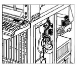

Systems Management
Office : Updates
by Agnes C. Bulay
Millennium
Update! The new library system, Millennium has finally
gone live this January. Full operation of the system covers
the circulation, acquisition, cataloging, serials, online
public access catalog and the base system modules. Patron
records of faculty and students have already been uploaded.
Dedicated terminals are available on all floors of the library
building. To access the new system, just type in the URL:
http://lib1000.dlsu.edu.ph.
Attention graduating students! Signifying
your intention to graduate can now be done fast and paperless.
Just log-on through your MyLaSalle homepage and click on the
“Apply to Graduate” link, fill out the necessary
information and submit.
e-Purse good news! Existing load rates
for your e-purse usage have gone down. From the previous denominations
of P500 to P1500, you can buy now at a minimum of P100 up
to P1000 in increments of P100. There’s more: your e-purse
can now be used to pay for your library charges starting February
1, 2004. So hurry, activate your e-purse and get your loads
now. Just drop by the Accounting Office for your e-purse activation.
Submission and Change of Grades! Submission
of final grades by faculty during finals week can now be done
on-line. Once a faculty is done with his final grade computation
and on-line encoding during finals week, grades can already
be viewed immediately by students. More than that, a faculty
can change grades on-line. Just click on “Request for
Change of Grade” link and specify the necessary changes.
Once approved and submitted to the Office of the University
Registrar, changes are reflected right away.
On-line Survey System. The ITC customer
satisfaction survey has been made to get feedback from students
and various offices and departments of the DLSU community
to reflect performance of the entire ITC team. These will
serve as inputs to ITC’s improvement initiatives and
short/long term plans. Deployment will take place from February
9 to April 16, 2004.
|